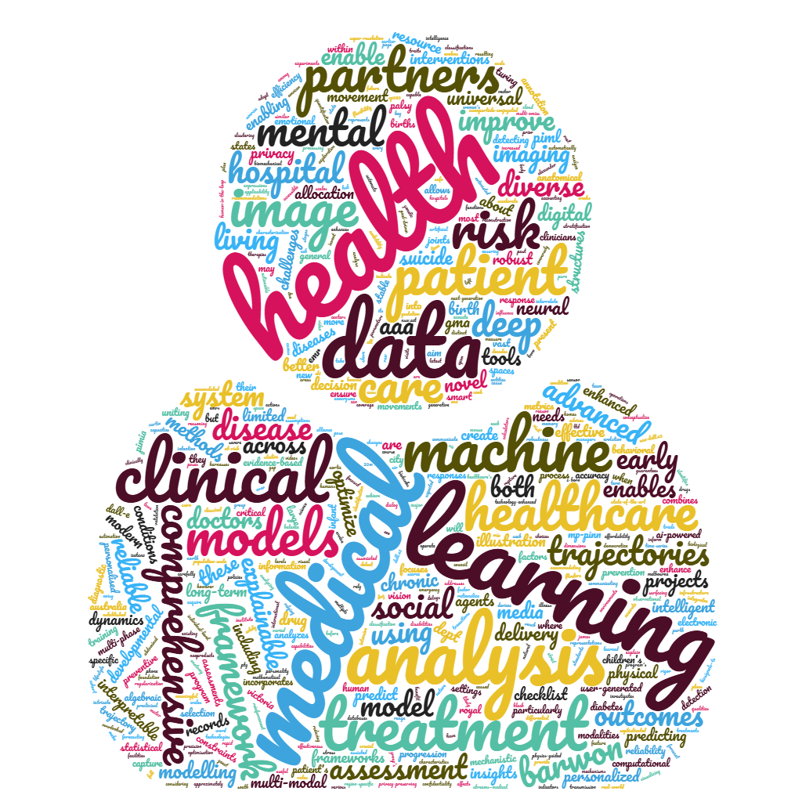

Build scalable, aligned AI systems that translate into clinically useful tools and inform policy, care, and health planning.
AI for Health
Clinically useful intelligence for care, monitoring, and longitudinal health.
This program develops clinical AI systems for imaging, longitudinal health, monitoring, public health, and human-centred clinical workflows.

Clinical AI assistants, imaging, cerebral palsy assessment, mental health, population health, patient trajectories, and longevity-related modelling.
Open to collaboration with clinicians, hospitals, researchers, public health teams, and partners working on high-impact health systems.
Program Areas
Clinical AI, imaging, and longitudinal health understanding.
Clinical AI assistants
Systems that observe, retrieve, reason, plan, recommend, and communicate with clinicians and patients in meaningful workflows.
Medical image analysis
Computer vision and multimodal systems for diagnosis, monitoring, and assistive clinical interpretation.
Trajectories and public health
Models of patient and population health through time, from mental health to epidemic and care-system forecasting.
- Recent advances in AI for biomedicine, 2025
- Cerebral palsy assessment and video analysis work
- Mental health treatment optimisation
- Longitudinal modelling and AI in public health